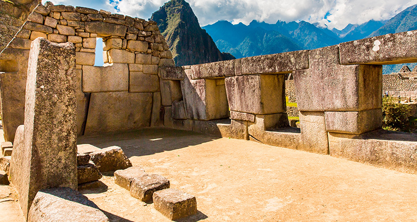

Machu Picchu
En lo alto de la montaña, grandes e impresionantes bloques de piedra unidos entre sí sin amalgama alguna conforman uno de los centros religiosos, políticos y culturales más importantes del imperio incaico: Machu Picchu. Descubierta en 1,911 por Hiram Bingham, la Ciudad Inca está dividida en dos grandes sectores: el agrícola, con una vasta red de andenes o terrazas artificiales, y el urbano, con bellas construcciones como el Templo del Sol. Sus andenes de un verde intenso y la imponente cordillera que la rodean conforman un hermoso paisaje que supera cualquier expectativa. Machu Picchu es hoy Patrimonio de la Humanidad y orgullo del Perú.

Ciudadela de Machu Picchu.

Historia de Machu Picchu
Ubicada en el corazón de los Andes peruanos, la sagrada ciudadela inca construida alrededor de 1450 y descubierta en 1911, esconde aún enigmas y misterios sobre su real propósito continuando ocultos hasta el día de hoy y que despiertan el interés tanto de visitantes como arqueólogos de todo el mundo. Debido a su estratégica ubicación en la cima de una alta montaña, existen diversas teorías sobre lo que pudo significar para los incas. Unas sostienen que fue construido como un gran mausoleo para el inca Pachacútec, mientras que otras afirman que fue un importante centro administrativo y agrícola cuyas zonas de cultivo sirvieron para el sustento de sus habitantes. Sin embargo, también se considera que fue utilizado como un necesario nexo entre los Andes y la Amazonía peruana o como una residencia de descanso para el gobernador inca. Lo cierto es que Machu Picchu conforma uno de los más grandes símbolos detrás de lo que fue la impresionante arquitectura e ingeniería del Imperio Inca. Si bien su origen aún es objeto de estudio, el valor y trascendencia que representó en su época, así como su imponente diseño, le han valido para ser considerada una de las siete maravillas del mundo moderno.
